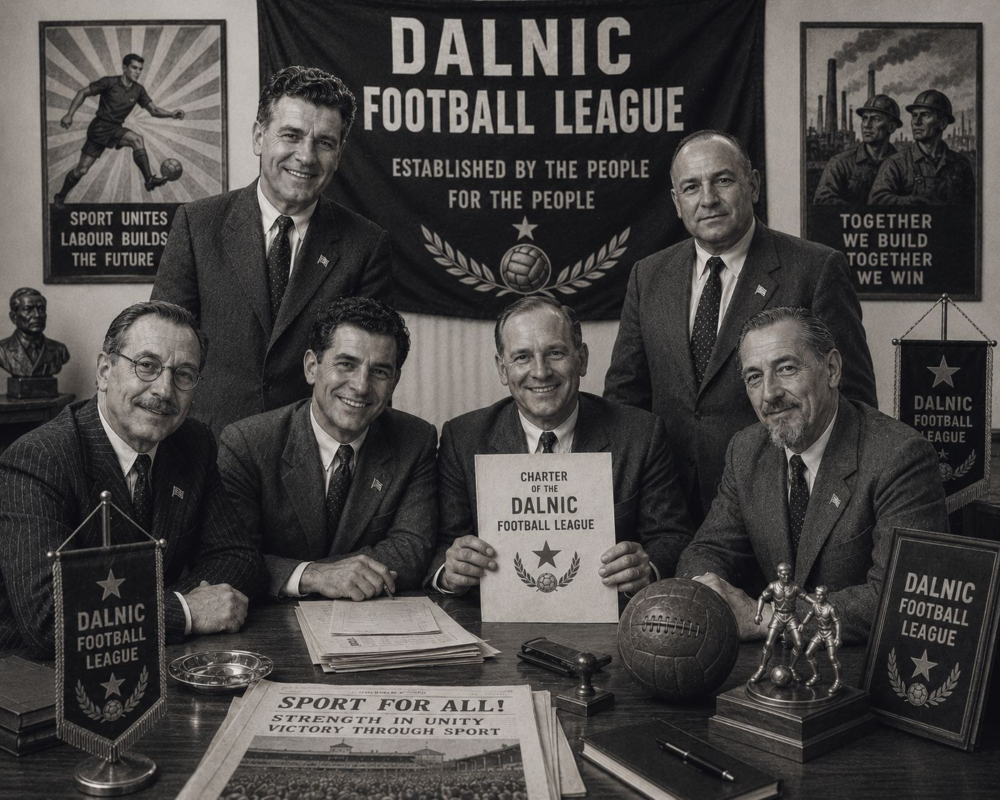
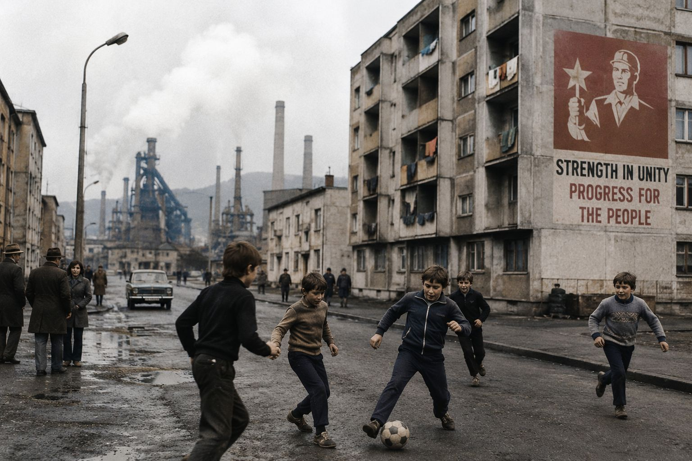
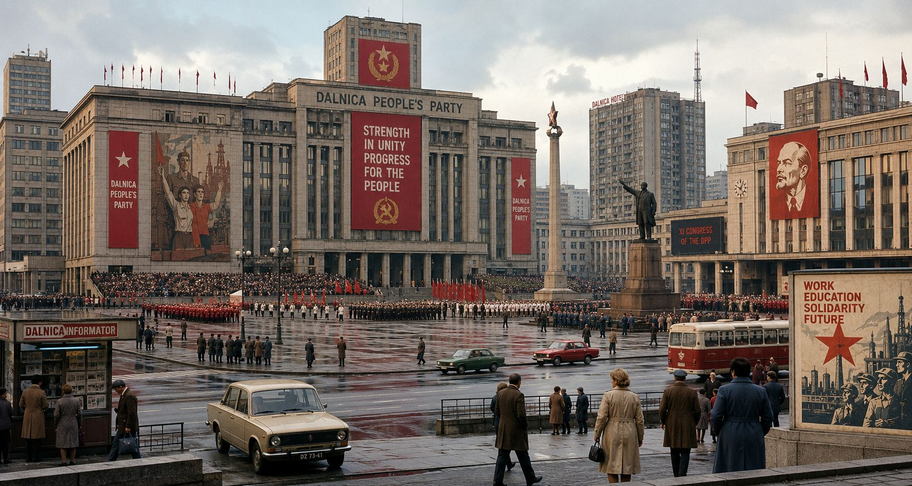

A Short History and Introduction
The Dalnic Premier League is the highest division in Valrekian football: a twelve-club, fully professional national competition and the central stage for the country’s most powerful sporting rivalries. Its clubs stretch across Valrekia’s industrial river cities, mountain towns, coastal ports, capital districts, borderlands and rural heartlands, making the league feel less like a single competition and more like representation of Valrekian society. The current structure features twelve clubs, European qualification places, a national cup pathway, and a domestic football ecosystem built around promotion, relegation, derbies and political tension.
The name, however, is where the league’s deeper story begins.
Despite being Valrekia’s national top flight, it is not called the Valrekian Premier League. It is called the Dalnic Premier League because it was created during the socialist period by the former government based in Dalnica, the capital city. The name was never neutral. It was political branding.
Not that it has always been called the Dalnic Premier League. In its original form it was known as the Dalnic Football League, only taking the terms Premier and Championship in the 2000s as the league signed a new, global broadcast agreement.

When the Dalnic Football League was established in the 1950s, football in Valrekia was still overwhelmingly a working-class game: born in railway yards, docks, military clubs, mining towns, factory districts and riverside neighbourhoods. The socialist government understood its emotional and tribal power. Football could gather people in a way official speeches rarely could. It could turn regional pride into national belief. It could make ordinary workers feel part of a larger project.

So the state took control of the competitions and professional associations.
Rather than naming the competition after Valrekia as a whole, the authorities tied it to Dalnica, the capital and seat of political power. The “Dalnic” name reinforced the idea that national football flowed from the capital outward: Dalnica as organiser, patron, referee and ultimate authority. It was a subtle but deliberate message to the industrial cities, provincial clubs and working-class supporters who had built the game long before the state professionalised it.
In public, officials described the name as a symbol of unity. In private, everyone understood the hierarchy. The capital led. The regions followed.

That legacy still shapes the league today. Union Dalnica, the capital powerhouse, remains associated with political influence and elite authority, while clubs like Dynamo Bresno, Iron Bresno, Lokomotiv Zreska and Velkovic Eagles carry the weight of industrial, regional and working-class identity. The league’s geography reflects those divisions: capital power, industrial heartlands, coastal commerce, mountain pride, military heritage and border politics all collide across the season. The name has survived revolutions, privatisation, foreign ownership, media expansion and modern commercial football. That is part of its power.
In modern Valrekia, the Dalnic Premier League is both a football competition and a national association. Its matches decide trophies, European qualification and relegation, but they also reopen old arguments about class, capital dominance, foreign investment, regional identity and who gets to define the future of the game. Dynamo Bresno’s Montiselle-backed rise, Iron Bresno’s fan-owned resistance, Union Dalnica’s establishment power, Port Vasska’s maritime wealth and FC Korvane’s new-money ambition have all made the DPL a league where every fixture matters.